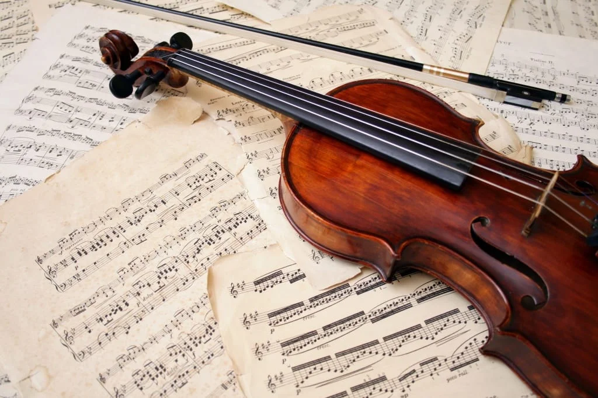

Pasiruošimas prieš koncertą:
kaip atrandu ramybę ir susikaupimą
Koncertinė scena – tai vieta, kurioje susitinka mėnesių mėnesius trukęs darbas, emocijos ir žiūrovų lūkesčiai. Prieš žengiant į šviesas, jaudulys yra visiškai natūralus, tačiau tam, kad jis netaptų kliūtimi, turiu savo asmeninę pasiruošimo rutiną. Šie keli žingsniai padeda man nusiraminti, nukreipti energiją reikiama linkme ir atiduoti visą save muzikai.

Likus kelioms valandoms iki pasirodymo, dėmesį perkeliu nuo pačių natų prie fizinės ir emocinės būsenos.
Sąmoningas kvėpavimas (4-7-8 metodas)
Gilus kvėpavimas yra greičiausias būdas sumažinti pulso dažnį ir kūno įtampą. Įkvepiu per 4 sekundes, sulaikau kvėpavimą 7 sekundėms ir lėtai iškvepiu per 8 sekundes. Kelios tokios ciklo minutės akimirksniu sugrąžina vidinę kontrolę.
Fizinis apšilimas ir raumenų atpalaidavimas
Jaudulys dažniausiai kaupiasi pečių, kaklo ir rankų srityje. Prieš sėdantis prie instrumento ar imant mikrofona, padarau lengvą tempimo mankštą, kad kūnas būtų laisvas, o judesiai – natūralūs.
Tylos ir vizualizacijos minutė
Apie 15–20 minučių prieš lipant į sceną praleidžiu visiškoje tyloje. Užmerkiu akis ir mintyse vizualizuoju pirmuosius kūrinio taktus, salės atmosferą ir ramų, užtikrintą savo žingsnį į sceną. Kaip garsai suskambės mintyse, taip jie suskambės ir tikrovėje.
Muzikalus apšilimas be skubėjimo
Prieš pat pasirodymą nekartoju visos programos ir neieškau klaidų. Groju arba dainuoju tik lėtas, ramias gamas ar pačias paprasčiausias ištraukas – tai padeda rankoms ar balsui apšilti, o protui – įeiti į muzikinį ritmą.